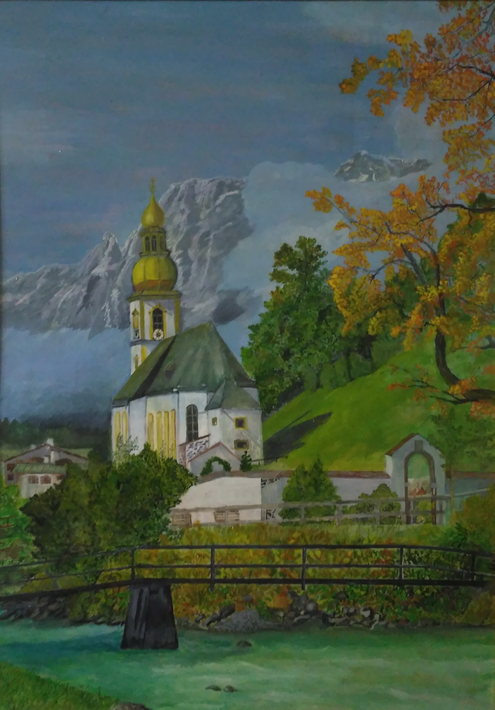

За горами, за желтыми долами
Протянулась тропа деревень.
Вижу лес и вечернее полымя,
И обвитый крапивой плетень.
Там с утра над церковными главами
Голубеет небесный песок,
И звенит придорожными травами
От озер водяной ветерок.
Не за песни весны над равниною
Дорога мне зеленая ширь —
Полюбил я тоской журавлиною
На высокой горе монастырь.
Каждый вечер, как синь затуманится,
Как повиснет заря на мосту,
Ты идешь, моя бедная странница,
Поклониться любви и кресту.
Кроток дух монастырского жителя,
Жадно слушаешь ты ектенью,
Помолись перед ликом спасителя
За погибшую душу мою.
С.Есенин
